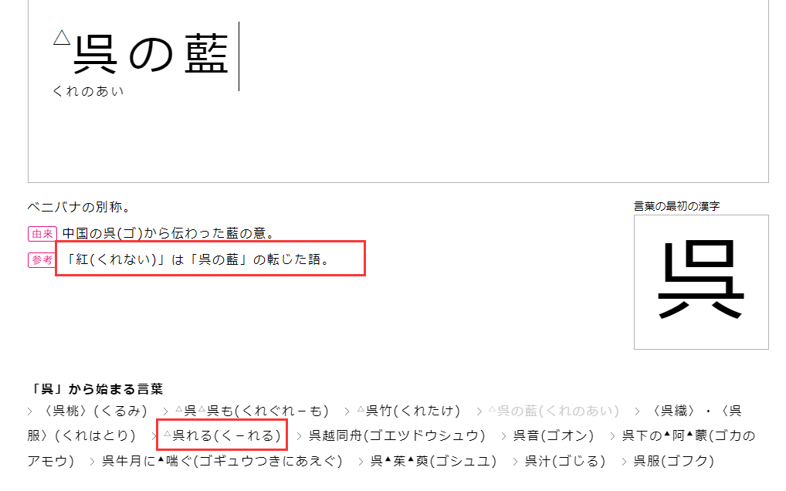
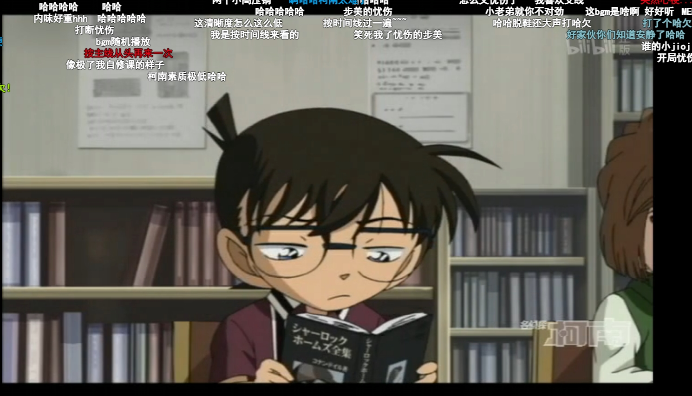
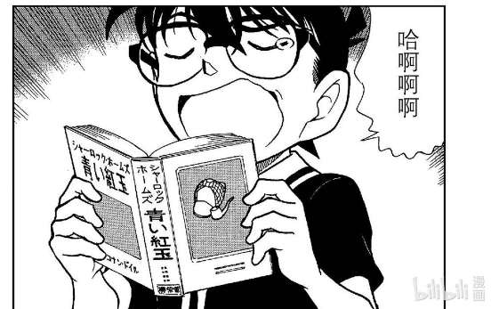

不知道有没有大佬提过(╯︵╰,)…忽然想到然后也不知道该发在哪里那就发这吧
因为我看柯南都是比较不带脑子的那种，看的也断断续续的…考据有错轻喷( ≧Д≦)
欢迎大佬补充(｡•́︿•̀｡)～！
因为我看柯南都是比较不带脑子的那种，看的也断断续续的…考据有错轻喷( ≧Д≦)
欢迎大佬补充(｡•́︿•̀｡)～！
首先是关于红的读音之一くれない（ku re na i）
有说其来源为くれのあい（ku re no a i）连读为くれない
而くれのあい即呉の藍（吴蓝）
意思是外国的染料，虽然这里写作蓝却不是表示蓝色，实际是红色
（具体可以去知乎上搜呉の藍）
而蓝在日语里的读音有两种，刚好是あい(a i)和らん(ran)，即读音对应哀和兰
 感觉73很离谱
感觉73很离谱
有说其来源为くれのあい（ku re no a i）连读为くれない
而くれのあい即呉の藍（吴蓝）
意思是外国的染料，虽然这里写作蓝却不是表示蓝色，实际是红色
（具体可以去知乎上搜呉の藍）
而蓝在日语里的读音有两种，刚好是あい(a i)和らん(ran)，即读音对应哀和兰
感觉73很离谱日语里的蓝和青和我们这的大概就是反过来的印象，藍反而指的是偏绿的印象
而青山又经常玩“青”和“红”的颜色梗，比如a药和青子红子，在柯南这边更是大量使用“赤”和“红”的颜色意象
而我个人是认为青山创作柯哀是对标快青的，前是“虽然外表是小孩，但是内在却是大人”组合，后是“虽然外表是大人，但是内在却是小孩”组合
毕竟魔快经常提到小孩、孩子之类的，基德也是kid。我甚至认为“孩子气”这一点是青山创作理念中非常重要的一节
其中青子可以被理解为青い子，即未熟な子（青涩幼稚的孩子）
可以印证这一点的是黑羽喜欢甜的，所以是甘い子（天真幼稚的孩子）
青い=甘い=未熟
而青山又经常玩“青”和“红”的颜色梗，比如a药和青子红子，在柯南这边更是大量使用“赤”和“红”的颜色意象
而我个人是认为青山创作柯哀是对标快青的，前是“虽然外表是小孩，但是内在却是大人”组合，后是“虽然外表是大人，但是内在却是小孩”组合
毕竟魔快经常提到小孩、孩子之类的，基德也是kid。我甚至认为“孩子气”这一点是青山创作理念中非常重要的一节
其中青子可以被理解为青い子，即未熟な子（青涩幼稚的孩子）
可以印证这一点的是黑羽喜欢甜的，所以是甘い子（天真幼稚的孩子）
青い=甘い=未熟
2024-03-09 03:47 | lasd13🌊:另外红子的名字读音为あかこ（akako），谐音赤子（あかご），也就是婴儿的意思
同时魔快那边的潘多拉也是
照着“月”光、宝石内部显现出红色、宝石的眼泪是长生不老药……能get到我意思吧（
而且哀是diamond，也是宝石
而a药不仅是长生不老药，更是返老还童药。于本作给我们带来了“永远的孩子”的柯哀
//
虽然可能不能拿动画论证，不过他们谜之经常改哀的眼睛颜色，早期偏蓝，后期偏绿……大概？但73画的貌似都比较蓝。偏绿也很正常，毕竟艾莲娜和赤井家是绿瞳。
其实也不怎么明显，但是跟柯比较还是能比出来的，所以动画哀的瞳色实际上是非常符合日语里这个“蓝”的颜色
（同样巧的是sissy sky里有红瞳小哀，可爱的捏 ）
）
照着“月”光、宝石内部显现出红色、宝石的眼泪是长生不老药
……能get到我意思吧（而且哀是diamond，也是宝石
而a药不仅是长生不老药，更是返老还童药。于本作给我们带来了“永远的孩子”的柯哀
//
虽然可能不能拿动画论证，不过他们谜之经常改哀的眼睛颜色，早期偏蓝，后期偏绿……大概？但73画的貌似都比较蓝。偏绿也很正常，毕竟艾莲娜和赤井家是绿瞳。
其实也不怎么明显，但是跟柯比较还是能比出来的，所以动画哀的瞳色实际上是非常符合日语里这个“蓝”的颜色
（同样巧的是sissy sky里有红瞳小哀，可爱的捏
）至此，在两个名字都是“蓝”的女孩子中，哀完美满足了“永远的孩子”、“蓝色（blue）的哀伤”、也许还有瞳色这些要求…以及呉藍这一红色本身所带的“外国”这一要素
前面也说过吴蓝是“外国的染料”，我觉得既可以用来形容包裹在红色生命之石“外”的潘多拉、也可以是包裹在红之外那一层青涩，即红色的aptx、将二人带去青色的童年期；蓝色的解药、带来……
前面也说过吴蓝是“外国的染料”，我觉得既可以用来形容包裹在红色生命之石“外”的潘多拉、也可以是包裹在红之外那一层青涩，即红色的aptx、将二人带去青色的童年期；蓝色的解药、带来……
提到颜色立马想到了红色的a药和蓝色的解药，不得不说红蓝搭配确实有一种宿命感
2024-03-02 11:31 | lasd13🌊:自古红蓝（）
所以快新的“宿敌”设定我觉得不止是侦探怪盗之间、
更是孩子气和成熟之间的相似而又相反。
这也是sr和ca的差距所在，即哀会更能爱上他人的“幼稚”，而小兰也许并非如此
over
更是孩子气和成熟之间的相似而又相反。
这也是sr和ca的差距所在，即哀会更能爱上他人的“幼稚”，而小兰也许并非如此
over
2024-03-02 12:16 | 贴吧用户_057V96N:2024-03-02 12:29 | lasd13🌊:回复 贴吧用户_057V96N :是的，确实sr幼稚很多.·´¯`(>▂<)´¯`·.是我表达能力的问题2333～这里的幼稚大概是说孩子特有的某种的品质，有点难用文字表达，可能是对某事单纯纯粹之类的感觉。但并不是说行事逻辑之类的w2024-03-31 02:14 | 🐷亿只猪🐷:回复 贴吧用户_057V96N :我理解一下lz的话，大概就是哀酱会喜欢上小柯是因为他身上干净的香味（单纯的孩子气）。而兰姐虽然初心也是喜欢上新一“救人不需要理由”的单纯，却在后续掺杂了很多物质上的东西（比买手机啊之类的）2024-04-29 04:57 | Angel哀ლ:回复 lasd13🌊 :少年感是吧

还真是...

2024-03-02 12:33 | lasd13🌊:红却是由“蓝”字而来这点很有意思2024-03-02 13:18 | 平者深黑:回复 lasd13🌊 :青山是挺喜欢他名字里的“青”字的，他说过喜欢的颜色是蓝色（青），因为名字里带这个字（2019年对话日），还有给早期漫画的留言《青いペン》系列
另外引用一句我很喜欢的一个作品中、另一个患有长不大的病的miyano（宫野）的话：我可是患有不治之症（不死之症）啊，死的宣告我已经听得够多了！
他确实揉了好多东西进去啊
2024-03-02 21:48 | lasd13🌊:(◡ ω ◡)～嗯，一些文字游戏的双关还是挺有趣的～2024-03-02 22:07 | 即将02的废物月:回复 lasd13🌊 :我有理由怀疑他一开始就根本。。。。2024-03-02 22:08 | 即将02的废物月:回复 lasd13🌊 :有理由怀疑他是穿越者2024-03-02 22:35 | lasd13🌊:回复 即将02的废物月 :嗯，颜色和扑克的梗他一直在玩，感觉算比较稳的2024-03-02 22:43 | 即将02的废物月:回复 lasd13🌊 :实在是太巧了，感觉是天时地利人和2024-04-29 05:53 | 却不若是:回复 即将02的废物月 :这就是宿命感吧，一切的答案都指向柯哀，太绝了。我今天看到漫画里草地女王的原型，她也比他丈夫大一岁。巧合的特别牛...
我一直认为怪盗和侦探作为宿敌，感情线也应该是反的，怪盗×元气少女，侦探×神秘魔女
漫画570/动画512 工藤新一少年的冒险
开头柯看的书为《青い紅玉》，算是个很直接的明示
不知道为啥动画不是这个书名突脸...
/
青い紅玉，即福尔摩斯的蓝色石榴石案，此处柯看的日译为“蓝色的红宝石案”
动画原创的1154光彦的侦探笔记2捏他了这篇故事
对这个宝石究竟是什么有各种各样的说法，其中也有一说为会变色的钻石（ダイヤ）
/
像盗一戴帽子和文字游戏的过程中出现了“鸟”、各种红色的事物等等都和此篇有联系。
另外很有趣的一点是，这几话的漫画标题为：月下、黎明、白昼、落日
而石榴石有转色的性质，
在日光下呈偏蓝色系，在白热光下呈偏红色系。
因此魔快的构造其实某种意义上来说就是对于青い紅玉的探寻，（月）光和青、红色，盗贼，帽子，鸽子是关键要素。
（看m27的访谈，给我整期待了，希望有哪天能回收一下这个东西...感觉这里明显埋伏了一手转色但是没讲完或者根本就没延伸到“蓝色”上就让人感觉很难受）
然后变色梗的话我个人印象比较深刻的回数有花茶的化学变色和赤壁的视觉残留
开头柯看的书为《青い紅玉》，算是个很直接的明示
不知道为啥动画不是这个书名突脸...
/
青い紅玉，即福尔摩斯的蓝色石榴石案，此处柯看的日译为“蓝色的红宝石案”
动画原创的1154光彦的侦探笔记2捏他了这篇故事
对这个宝石究竟是什么有各种各样的说法，其中也有一说为会变色的钻石（ダイヤ）
/
像盗一戴帽子和文字游戏的过程中出现了“鸟”、各种红色的事物等等都和此篇有联系。
另外很有趣的一点是，这几话的漫画标题为：月下、黎明、白昼、落日
而石榴石有转色的性质，
在日光下呈偏蓝色系，在白热光下呈偏红色系。
因此魔快的构造其实某种意义上来说就是对于青い紅玉的探寻，（月）光和青、红色，盗贼，帽子，鸽子是关键要素。
（看m27的访谈，给我整期待了，希望有哪天能回收一下这个东西...感觉这里明显埋伏了一手转色但是没讲完或者根本就没延伸到“蓝色”上就让人感觉很难受
）然后变色梗的话我个人印象比较深刻的回数有花茶的化学变色和赤壁的视觉残留


2024-03-09 03:54 | 即将02的废物月:冬瓜组反向划重点一直可以的2024-03-09 03:55 | 即将02的废物月:如何判断暗示信息是否有用：看冬瓜组在漫改动画里是否修改了该信息（bushi）2024-03-09 03:58 | lasd13🌊:回复 即将02的废物月 :这种一眼就能看出来青山是想要暗示什么东西的地方还要改也是没谁了2024-03-09 04:07 | 即将02的废物月:意义何在…
回复 lasd13🌊 :我都怀疑这也是73计划的一部分2024-03-13 09:30 | 灯都安郎🍪:你要是有心可以搜搜日语里「黑青红白」的组合，会有很有意思的东西看

因为我懒得开贴就顺便发发，关于吧内大佬之前考据的扑克论的黑桃骑士

其实黑羽盗一的名字本身就是J了
くろば とういち，后半段的盗一中とう是日语中“十”的发音，いち就是一，连起来是“十一”
很有趣的一点是工藤新一用数字谐音来写是910 41，取新一名字的缩写（藤和一）会得到10和1，也就是盗一。
而取盗一名字的缩写会得到工藤（黑（くろ）的一半的く+盗的とう=工藤くどう910）。
这样的手法上次见还是在弹丸论破v3...最原终一的缩写为最终（谐音才囚），而剩下的两个字大概是分别来自于灰原和新一（然而很巧的是这样读音就恰好同秀一了wwwv3发售之前还在想小高是不是秀哀党，然后后来游戏里却是狠狠的捏他了新一），有时候很好奇小高和73有没有什么来往，他甚至玩梗把小吉的生日定为和快斗同一天（也是和73同一天）
而黑羽这个姓氏实际上不仅是谐音クローバー（三叶草），同时也利用了日语的谐音（羽和叶都可读为は），即为黒い葉，黑色的叶子，英语谐音和日语谐音合起来很完美地是扑克牌的黑色梅花的意思。
其实黑羽盗一的名字本身就是J了
くろば とういち，后半段的盗一中とう是日语中“十”的发音，いち就是一，连起来是“十一”
很有趣的一点是工藤新一用数字谐音来写是910 41，取新一名字的缩写（藤和一）会得到10和1，也就是盗一。
而取盗一名字的缩写会得到工藤（黑（くろ）的一半的く+盗的とう=工藤くどう910）。
这样的手法上次见还是在弹丸论破v3...最原终一的缩写为最终（谐音才囚），而剩下的两个字大概是分别来自于灰原和新一（然而很巧的是这样读音就恰好同秀一了wwwv3发售之前还在想小高是不是秀哀党，然后后来游戏里却是狠狠的捏他了新一），有时候很好奇小高和73有没有什么来往，他甚至玩梗把小吉的生日定为和快斗同一天（也是和73同一天）
而黑羽这个姓氏实际上不仅是谐音クローバー（三叶草），同时也利用了日语的谐音（羽和叶都可读为は），即为黒い葉，黑色的叶子，英语谐音和日语谐音合起来很完美地是扑克牌的黑色梅花的意思。
2024-03-09 05:07 | 即将02的废物月:这个老头真的很夸张